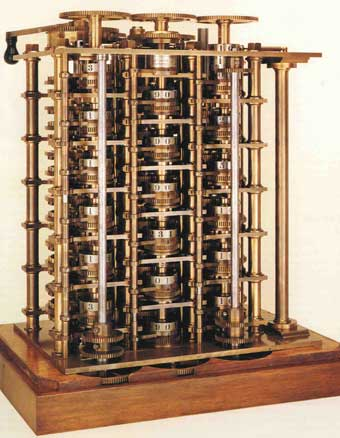

Matemático e ingeniero británico "(Teignmouth, 1792 - Londres, 1871)", inventor de las máquinas calculadoras programables. A comienzos del siglo XIX, bien avanzada la Revolución Industrial, los errores en los datos matemáticos tenían graves consecuencias: por ejemplo, una tabla de navegación defectuosa era una causa frecuente de los naufragios. Charles Babbage creyó que una máquina podía hacer cálculos matemáticos más rápidos y más precisos que las personas.
